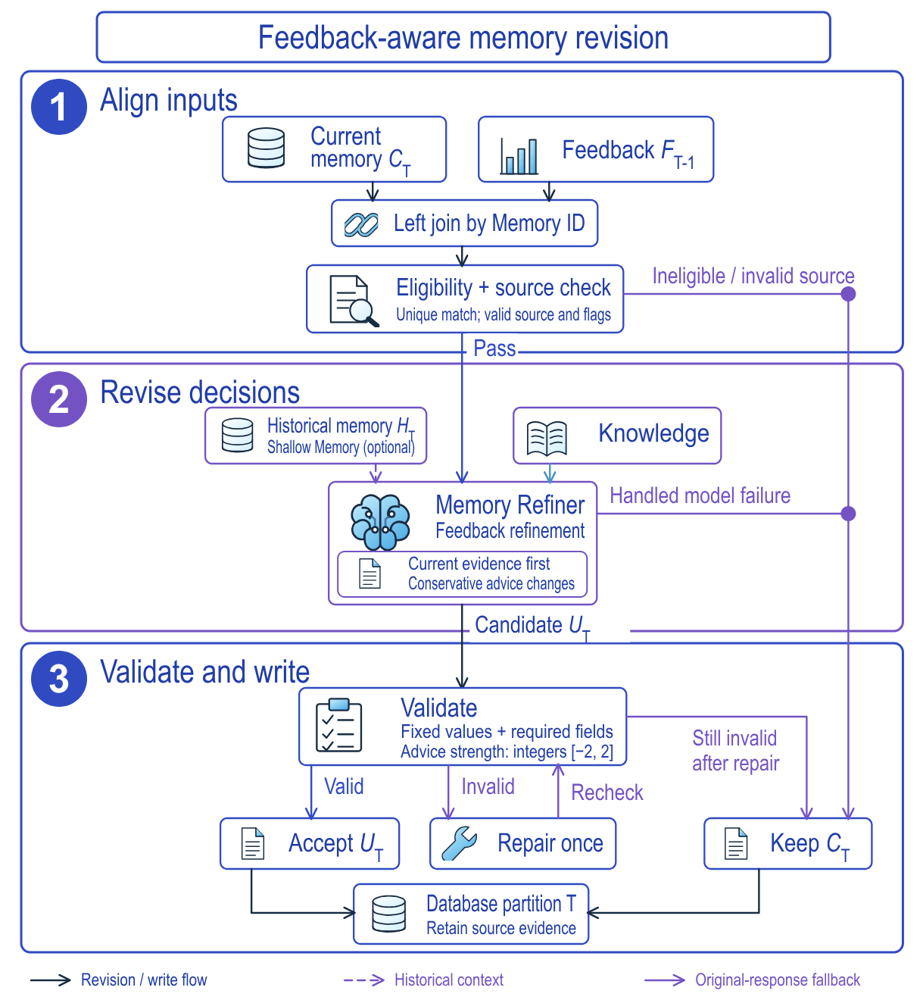

这篇值得做推荐的人读，但要读它的工程做法，不要读 +1.78% 这个数字。LLM 写出的“人群画像和建议”一旦上线，第二天的订单、浏览数据回来了，能不能让 LLM 改建议，又保证它不会顺手改掉画像里记录的人群和指标？RecGroupMemory 的答案是：提示词让 LLM 只改 Profile、Advise 和附带的结构化建议等决策内容，程序再检查人群定义、观察窗口、聚合指标等 7 项和原记录一字不差，校验不过就回退到原记录。线上实验里，加了记忆（没有反馈修订）的一组比无记忆基线多 1.58% 的成交用户，加了反馈修订的一组多 1.78%。但这两个数字各自对照的是自己的无记忆基线，不能直接相减，所以它还没有证明“反馈修订本身带来了多少”。
它在补哪个缺口
先说已有做法。这个系统里，淘宝推荐流程由一个在线的编排 LLM（orchestration LLM）规划：看到请求后决定这次推荐工作流怎么走，检索、排序、重排仍由已有组件完成。基线 B 里，编排 LLM 只看请求上下文。
RecGroupMemory 先给它补上“人群记忆”（cohort memory，论文的叫法）：把一类用户（由记录里的人群划分定义圈定）在某个时间窗口内的行为、实验结果和场景观察汇总成一条记录，其中有两段文字给编排 LLM 读。Profile 概括这群人当前的漏斗表现，Advise 给出针对不同目标的调整建议、理由和回滚条件。这条记录本身是一份模型生成的 JSON。每次更新改的是这条记录，不是任何模型参数。
缺口出在“记录写完以后”。成交、浏览这些结果要隔天才回来，回来的数据可能说明昨天的建议不对。要改，最省事的做法是让 LLM 重新生成整条记录。论文担心的是这一步：重新生成的同时，LLM 也可能改动记录里的人群定义、观察窗口或指标数值。那么建议看上去“更好了”，可能只是因为描述的人群或数字变了。RecGroupMemory 的另一半针对的就是更新这一步：反馈到达后让 LLM 改“怎么解读这些观察”，再由程序检查观察本身没有被改。
用一个示意场景贯穿后文（数字均为示意）：每条人群记忆记录有一个编号（Memory ID），反馈靠它对回记录。其中一条编号为 m-17，Advise 对商品详情页浏览量（IPV）的强度是 +1，对 CVR 是 0。第二天回来的反馈里，IPV 比参照流量高 3%（参照怎么取见下一节），但成交用户数这项缺失。
整体流程

图 1 的主线可以拆成四步。Evidence Extractor 把行为、实验结果、画像与场景等信号整理成事件、实验、场景三类记忆，放进 Shallow Memory（论文里存放这些记忆的存储层）。Memory Builder 把这三类记忆里的观察合并成一条人群记忆记录，记录里有人群、观察窗口、聚合指标等字段，以及最初的 Profile 和 Advise（图中还有一块知识库，同时支撑 Builder 和 Refiner）。Memory Refiner 在有反馈时修订其中的 Profile 和 Advise。发布后，Shallow Memory 保存 Profile、Advise 和 Evidence，但只有 Profile 和 Advise 注入编排 LLM。在线日志又回到 Evidence Logs，通过 Memory ID 和各条记忆对上，成为下一轮的反馈。线上规划读的是已经发布到 Shallow Memory 的记录；但每次请求根据什么选中某条人群记录、用的是哪个版本，论文没有说明。
这套设计的分工是：Builder 负责根据证据写出记录，Refiner 只负责在反馈到来后改写。Memory Builder 具体怎么把证据写成 Profile 和 Advise，论文只给了输入和输出，没有展开。
反馈怎么对上记录
不是每条记录都会交给 Refiner 改。修订由一个反馈节点（feedback node）组织：对齐输入、检查资格、校验和写库都是这个节点里的程序步骤，Memory Refiner 只是其中调用 LLM 生成新记录的那一步。库里的记录按日期分区存放。C_T 是从日期分区 T 读出的当前记录，也就是这次待修订的对象；F_{T-1} 是前一天（T−1）的反馈。论文没有说明 C_T 是当天由 Builder 重新生成的，还是沿用了上一轮的修订结果，只说明它是修订的起点。反馈节点先按 Memory ID 把两者左连接。论文自己提醒，靠 Memory ID 连接并不能证明反馈由这条建议造成。只有同时满足这些条件才进入修订：恰好匹配到一行反馈；上游步骤给出的三个标志都为通过（原文只列出名称：画像有效、基线匹配、反馈合格；判定在上游完成，反馈节点读取结果）；原记录本身有效。任何一条不满足，这条记录不进 Refiner，直接保持 C_T。有资格也不代表每个目标的证据都够，缺了哪些指标要由提示词在选调整方向时考虑。 Hoot 说

左右滑动或点箭头看四步。记录 A、B、C 和它们的反馈都是示意，不是论文样本。 出处: 论文 §2 反馈修订：恰好一行匹配、三个上游标志、源记录有效；资格不保证每个目标证据充分；转化优先提示词的 CVR 条件
反馈本身是一个相对变化：对 Memory ID i 的指标 q，δ = q_i / q_base(i) − 1。分子 q_i 是这条记忆对应的指标值，具体统计哪部分流量、在线日志怎样按 Memory ID 汇总，论文没有说明。分母 q_base(i) 是同一画像的全部流量在平台“首猜”推荐场景里的同一指标。提示词直接使用这个带符号的数：0 表示没有观察到变化，缺失表示没有证据，不能当作中性或正向反馈。
对有资格的记录，还可以从 Shallow Memory 里按人群检索一份可选的历史记录 H_T（不一定来自前一天的分区），用来对照以前的建议。它只当背景：不能用历史数字覆盖当前观察，也不能压过新反馈；检索失败时照常修订。C_T 始终是修订的基础。
改什么、不改什么

Refiner 输出的是一整份 JSON，不是补丁。图 2 的第三段说明了它怎么被约束。固定不变的值有 7 项：schema 版本、人群、推荐器版本、记忆范围、人群划分定义、观察窗口、聚合指标。Profile 和 Advise 必须是非空字符串。提示词允许改的是它们的文字、结构化建议、置信度、不确定性说明和变更说明。校验器并没有一份完整的“可改字段”白名单：它只强制这 7 项固定值和必填结构，所以“只改解读”一半靠提示词，程序真正守住的是这 7 项。
建议的强度是 {−2, −1, 0, 1, 2} 里的整数，分别对应 CTR、IPV、CVR、GMV 四个目标。预期的更新是
a_q 是 C_T 里这个目标当前的强度（老记录没有结构化建议时记为 0），Δ_q 是这次的调整：加一档、减一档或不动。按这个预期，每次每个目标最多动一档。库里存的是改完的 a'，不是 Δ。已经在 ±2 的强度再往外调，存下来的数不会变，这时理由文字能帮助看出这次其实请求过调整。“回到上一版”这个动作也只是保留 C_T 里的强度，不会去恢复历史记录 H_T 里的值。这些强度只表示建议的强弱，不是校准过的概率，也不是排序分的乘数；修订节点本身不产出排序权重。编排 LLM 读到的只有 Profile 和 Advise 两段文字；它读后具体改动工作流里的哪些决策，结构化建议里的强度是否、以及怎样影响下游的检索和排序，论文没有说明。
回到示意场景：m-17 的 IPV 强度是 +1，反馈里 IPV 比参照流量高 3%。如果 Refiner 决定再加一档，IPV 会变成 +2。CVR 则不一样。论文的转化优先提示词规定：只有成交用户数和订单数的相对变化都存在且为正，才允许加强 CVR 建议；浏览指标再好也不能代替。这里成交用户数缺失，所以 CVR 建议保持保守。记录仍然可以修订：Profile 写出浏览端的变化，Advise 保持保守的转化立场，缺失的成交结果写进不确定性说明。提示词还把“评价旧策略”和“选下一步调整”分开：证据不够时保留原建议，并不等于认定原策略成功了。
目标优先级可以配置：上面这个转化优先的提示词重视 CVR、压住 GMV 的调整；另一种浏览优先的提示词重视 IPV，同时对成交设保护。作者强调，公式 (1) 描述的是预期更新，不是所有配置下都由程序保证的规则。校验器对强度只检查结构、是否为整数、是否在 −2 到 2 之间。只有浏览优先的配置，校验器才多查一项“方向和强度是否一致”。原文对这项检查只给出“方向和强度是否一致”这个名称；从上下文看，“方向”大概是 Advise 对某个目标要加强、减弱还是保持，强度则是存下的整数。“保守”之类的语义约束主要靠提示词。 Hoot 说
提示词与公式 (1) 的预期
- 每次调整
- 每个目标最多加减一档
- 0 → +2
- 不符合预期：跨了两档
- 证据不够时
- 保持保守，靠提示词约束
校验器实际检查
- 固定值
- 7 项必须与 C_T 相同：合格
- 强度
- 整数、在 −2 到 2 之间：+2 合格
- 0 → +2
- 不会因为跨两档被拒
方向和强度是否一致只在浏览优先配置里才查。
假设转化优先配置下，Refiner 把某个目标的强度从 0 直接改成 +2，其余固定值和必填结构都合格。左边是公式 (1) 的预期，右边是校验器实际检查的内容。数字为示意。 出处: 论文公式 (1)；§2 校验只查建议结构、整数类型和范围，仅浏览优先配置另查方向和强度一致
校验、修复和回退
Refiner 生成候选后，反馈节点先校验；不通过时允许让模型修复一次：要求它恢复合法 JSON 和固定值，同时保留原来的结论和建议文字。U_T 指经过这至多一次修复后的候选。最终输出 O_T 的规则是：
e_T=1 表示这条记录有资格修订且源记录有效，𝒱 检查 7 项固定值是否和 C_T 相同、必填字段是否齐全。修复后仍不过就保留 C_T；源记录无效的直接跳过生成，模型调用出错也保留 C_T。在单条记录层面能处理的这些情况下，每条记录都有输出，覆盖率不掉；写分区本身失败不在此列（见局限）。被采用的新记录替换原来的回复内容和模型元数据，来源证据列保持不变。
这个设计守住的是“观察没被改”，不是“建议改对了”。校验只比较固定值和结构，不能判断修复后文字的语义是否等价，通过校验也不代表建议真的变了或结果真的更好。回退同样不说明原建议最优，只说明记录没丢。
整个任务在处理前要求来源 ID 非空且唯一，写完后核对输入和输出记录数及 ID 集合一致。写入数据库分区和发布到 Shallow Memory 是两个阶段，图 2 在写库处结束。
线上实验
实验对象是业务方挑选的低购买力淘宝用户。基线 B 是只靠请求上下文规划的编排 LLM。E1 比较 B 和加了 Builder 生成的 Profile、Advise 但没有反馈修订的 M；E2 比较它自己的无记忆基线和用同一接口、并启用 Refiner 的 F。每组都对照自己的无记忆对照，所以两列没有放在同一个基线上。
| 指标 | M/B（E1） | F/B（E2） |
|---|---|---|
| 成交用户（Transaction UV） | +1.58% | +1.78% |
| 订单（Orders） | +0.80% | +2.05% |
| PCVR | +1.60% | +1.95% |
| 曝光用户（Exposure UV） | +0.14% | +0.02% |
| 点击用户（Click UV） | −0.42% | +0.04% |
| IPV UV | −0.50% | +0.17% |
PCVR（表 1 原文的指标名，在表中与成交用户、订单并列）：这里不猜它是预估还是实际转化率；成交用户和订单两项不受这个歧义影响。两组的成交用户、订单、PCVR 都为正，曝光用户只变了 +0.14% 和 +0.02%，所以正向变化集中在成交端，曝光和浏览量基本停在基线附近。M 组点击和 IPV 用户反而略降（−0.42%、−0.50%），成交却涨；F 组这两项微升（+0.04%、+0.17%）。这些只是表里的观察，原因没有被单独检验。
最需要注意的一句是：F 的订单涨幅（+2.05%）比 M（+0.80%）大，但它们不是同一对照，论文自己也说这些结果不能直接估计“在 M 基础上加反馈修订”的增量。
局限
第一，表 1 只给相对变化，没有样本量和置信区间，+0.02%、+0.04% 这类数无法判断是否属于噪声。
第二，实验比较的是整套工作流配置，不是单个保护措施。论文说对应实验的部署产物已无法取得，所以不能把增益归因到“7 项固定值”或“修复一次”；要证明这一点，需要在匹配条件下做反馈消融，留下能把线上实际使用的记忆和对应修订关联起来的追踪记录，并做运行时测量。
第三，历史检索没有绑定日期或内容哈希，只靠 Memory ID 无法确认线上当时用的是哪个版本；回退按单条记录进行，写分区失败仍可能留下部分输出。自然语言记忆加上小人群，还需要访问控制、保留期限和聚合限制。
一个推荐/搜索团队可以怎么试
- 按论文讨论部分的建议，把“资格、校验通过、建议真的变了、下游指标变化”分开记录。我认为这一步成本最低，也是看清更新是否有效的前提。
- 给 LLM 生成的摘要记录列一份固定字段清单（人群定义、时间窗口、指标值），改写后做逐项相等校验，失败即回退。这一步不需要线上流量。
- 反馈修订做成独立开关：同一批人群一组只用不带反馈的记忆，一组加反馈修订，对照同一个无记忆基线，才能拿到论文没测出的增量。
- 缺失反馈要显式标出，规定哪些建议只在哪些指标齐全、为正时才允许加强。
结论
RecGroupMemory 把“LLM 改建议”拆成“证据不可改、解读可改”两层，并用校验加回退兜底，这个做法可以直接借鉴；实验显示整套记忆流程在成交端有小幅正向变化（没有置信区间），反馈修订的单独贡献没有被测出来。
| 维度 | 评价 |
|---|---|
| 问题重要性 | 中高。LLM 生成的记忆要随反馈更新，且不能污染原始观察 |
| 方法创新性 | 中。创新在固定值校验和回退的约束，不在新模型 |
| 实验证据 | 中低。有线上结果，但无置信区间，且无法拆出反馈修订的增量 |
| 工程成本 | 中（这是我的估计，不是论文里的数字）。除日期分区、Memory ID 对齐和校验逻辑外，Builder 和 Refiner 都要调用 LLM |
| 是否值得尝试 | 值得先做“固定值校验加回退”，再单独验证反馈修订 |
读完这篇，你觉得
夜读鸮记下了，谢谢你的反馈。
点一下即可，无需登录；再点一次撤回。只统计匿名次数，不记录你是谁。
相关论文RELATED
 Generative · 2026-11-02UGR: Unified Generative Ranking for Heterogeneous E-commerce Recommendation淘宝的生成式排序框架 UGR 让一个生成模型直接排出用户最后看到的那一屏：一次请求里约一千个自然内容、广告和其他业务的候选一起交给它，逐个生成最终列表，不再由各业务先各自排好、再交给混排拼接。拼接这一步正是原来的毛病：生成模型排好的列表被混排插进别的内容，位置和上下文都变了，模型学到的前后顺序就不成立了。在猜你喜欢的线上 A/B 中，成交量提升 3.29%；同一个模型只排自然内容、再交给原来的混排，成交量只涨 2.84%，差出来的部分就是统一生成本身的收益。
Generative · 2026-11-02UGR: Unified Generative Ranking for Heterogeneous E-commerce Recommendation淘宝的生成式排序框架 UGR 让一个生成模型直接排出用户最后看到的那一屏：一次请求里约一千个自然内容、广告和其他业务的候选一起交给它，逐个生成最终列表，不再由各业务先各自排好、再交给混排拼接。拼接这一步正是原来的毛病：生成模型排好的列表被混排插进别的内容，位置和上下文都变了，模型学到的前后顺序就不成立了。在猜你喜欢的线上 A/B 中，成交量提升 3.29%；同一个模型只排自然内容、再交给原来的混排，成交量只涨 2.84%，差出来的部分就是统一生成本身的收益。 Generative · 2026-10-29KL-MOPD: Discrepancy-Aware Multi-Objective On-Policy Distillation for Generative Recommendation把点击老师和价值老师一起蒸馏进生成式推荐时，每个 token 平分权重并不公平：在 TencentGR 上，学生生成第 1 个 token 时离价值老师的 KL 是离点击老师的 3.13 倍，而且难学的老师在后两个 token 换成了点击老师。浙大和阿里的 KL-MOPD 在训练前算一次学生离两个老师的距离，每个 token 上离得更远的老师拿更大的权重，训练时没有额外开销。线上 A/B 中，广告收入提升 1.63%，说明点击和价值两个目标一起涨了。
Generative · 2026-10-29KL-MOPD: Discrepancy-Aware Multi-Objective On-Policy Distillation for Generative Recommendation把点击老师和价值老师一起蒸馏进生成式推荐时，每个 token 平分权重并不公平：在 TencentGR 上，学生生成第 1 个 token 时离价值老师的 KL 是离点击老师的 3.13 倍，而且难学的老师在后两个 token 换成了点击老师。浙大和阿里的 KL-MOPD 在训练前算一次学生离两个老师的距离，每个 token 上离得更远的老师拿更大的权重，训练时没有额外开销。线上 A/B 中，广告收入提升 1.63%，说明点击和价值两个目标一起涨了。 Generative · 2026-11-10Rethinking Latent Reasoning for Generative Recommendation: Beyond Teacher-Generated CoT and Recurrent Hidden-State Feedback生成式推荐若要在中间做潜在推理，通常得先让老师模型写出思维链，成本高，也不容易稳定。这篇论文不再生成老师轨迹，而是先用固定的稀疏编码器把历史商品描述编成可缓存的词汇特征，再把同一用户见过的商品特征汇总成一个多热语义目标；训练时用浅层线性头，让插在历史和目标商品编码之间的推理 token 的隐状态去预测这个目标。这些目标只依赖历史上见过的商品，不会偷看下一个要预测的物品。只做监督微调时，方法在四个推荐基准上超过所比较的基线；在 Beauty 上，相对 MiniOneRec，NDCG@1 提高了 20.6%，NDCG@5 提高了 10.3%。对照实验表明，增益来自与输入对齐的历史语义监督，而不是多出来的 token 本身。
Generative · 2026-11-10Rethinking Latent Reasoning for Generative Recommendation: Beyond Teacher-Generated CoT and Recurrent Hidden-State Feedback生成式推荐若要在中间做潜在推理，通常得先让老师模型写出思维链，成本高，也不容易稳定。这篇论文不再生成老师轨迹，而是先用固定的稀疏编码器把历史商品描述编成可缓存的词汇特征，再把同一用户见过的商品特征汇总成一个多热语义目标；训练时用浅层线性头，让插在历史和目标商品编码之间的推理 token 的隐状态去预测这个目标。这些目标只依赖历史上见过的商品，不会偷看下一个要预测的物品。只做监督微调时，方法在四个推荐基准上超过所比较的基线；在 Beauty 上，相对 MiniOneRec，NDCG@1 提高了 20.6%，NDCG@5 提高了 10.3%。对照实验表明，增益来自与输入对齐的历史语义监督，而不是多出来的 token 本身。 Personalization · 2026-10-30Multi-Branch Cooperation Networks for Enhanced Click-Through Rate Prediction in Large-Scale E-Commerce Search做排序的团队值得读，因为它指出了多分支模型一个常被忽略的浪费：各分支擅长的样本不同，训练时却从不互相学。淘宝拍立淘（拍照搜商品）团队让三个分支在训练中互相纠错：同一条样本上，一个分支判对了用户点不点、另一个判错了，就用判对那个的预测去带判错的那个。另加一项约束，要求一个分支的中间向量乘上一个正交矩阵后，接近另一个分支的向量。线上 A/B 中点击率从 10.37% 提到 10.46%，GMV 相对提升 1.62%。多分支的收益不只来自多放几个分支，还来自让它们在彼此出错的样本上互相纠正。
Personalization · 2026-10-30Multi-Branch Cooperation Networks for Enhanced Click-Through Rate Prediction in Large-Scale E-Commerce Search做排序的团队值得读，因为它指出了多分支模型一个常被忽略的浪费：各分支擅长的样本不同，训练时却从不互相学。淘宝拍立淘（拍照搜商品）团队让三个分支在训练中互相纠错：同一条样本上，一个分支判对了用户点不点、另一个判错了，就用判对那个的预测去带判错的那个。另加一项约束，要求一个分支的中间向量乘上一个正交矩阵后，接近另一个分支的向量。线上 A/B 中点击率从 10.37% 提到 10.46%，GMV 相对提升 1.62%。多分支的收益不只来自多放几个分支，还来自让它们在彼此出错的样本上互相纠正。
讨论
欢迎补充实验细节、复现经验或不同看法。需 GitHub 登录。
正在加载讨论…